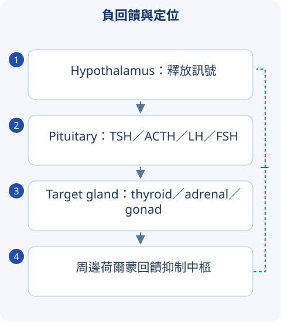

判讀圖解

詳讀 01內分泌判讀：先找軸線與回饋
多數軸線由下視丘、腦下垂體、目標腺體組成。目標激素低而促進激素高，常為 primary failure；兩者都低或促進激素「不適當正常」，考 central disease。先確認採血時間、急性病、外源激素與藥物，避免把不適合時機的檢驗當確診。
靜態濃度適合部分疾病；疑激素不足常用刺激試驗，疑自主性過多常用抑制試驗。單看正常區間不夠，例如 cortisol 低時 ACTH 正常可能是「相對不足」。
詳讀 02腦下垂體：泌乳素、肢端肥大與缺乏
Prolactin 受 dopamine 抑制；腦下垂體柄受壓可解除抑制而升高，不是高 prolactin 都是 prolactinoma。懷孕、甲低、腎衰竭、antipsychotic／metoclopramide 都要排。大型病灶與數值不符時考慮 hook effect，必要時稀釋重測。Prolactinoma 常以 dopamine agonist 治療，但需整合視野與腫瘤情況。
Acromegaly：成人 GH 過多造成手足變粗、面容變化、出汗、OSA、糖代謝異常；以 IGF-1 篩檢，OGTT 後 GH 未適當抑制支援，MRI 定位。不是隨機一次 GH 就確診，因 GH 脈衝分泌。
垂體缺乏可涉及 cortisol、thyroid、gonadal 等；若 cortisol 與 thyroid 同時不足，先補 glucocorticoid 再補 thyroid hormone，避免誘發腎上腺危象。產後大量出血後無乳、停經考 Sheehan；突發頭痛、視力下降、低血壓考 pituitary apoplexy。
詳讀 03多尿：尿崩症與原發性喝水過多
先確認是真正高尿量，再分 osmotic diuresis（高糖等）與 water diuresis。中央性 DI 是 ADH 缺乏；腎性 DI 是腎臟對 ADH 不反應，常考 lithium、高鈣、低鉀；primary polydipsia 是攝入過多。
高血鈉合併不適當稀尿支援水分調控異常；低或正常低端 Na 常見 primary polydipsia，但並非絕對。Desmopressin 後尿濃縮反應、經監測的試驗及 copeptin 流程依資源選擇；缺水試驗需監督，不可讓已高鈉脫水者自行禁水。
詳讀 04甲狀腺：TSH 和 free T4 配對
| 組合 | 方向 | 下一步 |
|---|---|---|
| TSH 低、free T4／T3 高 | thyrotoxicosis | 分合成增加、破壞性 thyroiditis、外源攝入 |
| TSH 高、free T4 低 | primary hypothyroidism | Hashimoto、術後／碘等病史 |
| free T4 低、TSH 低或正常 | central hypothyroidism 或急性病影響 | 垂體與其他軸線評估，不能說 TSH 正常就排除 |
| TSH 異常、free T4 正常 | subclinical 情境 | 重測與風險、藥物、病程，不是一律立即治療 |
寬表格可左右捲動
Graves 常有 TRAb、diffuse goiter、眼病；毒性結節為區域性自主合成。Thyroiditis 是庫存激素釋放，攝碘較低，抗甲狀腺合成藥不一定有作用；疼痛型常考 subacute thyroiditis，無痛型可產後。
治療與急症
Methimazole／PTU 抑制合成；PTU 另抑制 T4→T3。粒線缺乏的警訊是發燒、喉嚨痛，須停藥並評估 CBC；PTU 肝毒性重要。孕期早期常偏 PTU，後續選擇需依指引與專業評估。
Thyroid storm 為發燒、明顯 tachycardia、CNS／GI／心衰竭失代償，數值高低不能獨自判斷；治療有支援、阻斷交感、抑制合成、合成阻斷後給碘及 steroid／誘因處理。Myxedema coma 考低溫、意識變化、低通氣、低鈉；需 thyroid replacement 與 adrenal insufficiency 評估。
甲狀腺結節先看 TSH 和 ultrasound risk；TSH 低可做功能性掃描。熱結節惡性風險通常較低；FNA 按超音波風險與尺寸，不是所有結節抽，也不能靠血清 thyroglobulin 篩檢癌。
詳讀 05腎上腺：不足、過多與醛固酮
Primary adrenal insufficiency：低 cortisol、高 ACTH，可色素沉著、高鉀與低鈉；secondary／tertiary 通常 mineralocorticoid 較保留，不一定高鉀或色素沉著。晨間 cortisol、ACTH 與 stimulation test 依情境；危象低血壓／休克時抽檢不能延誤 steroid 及補液。
Cushing syndrome 包含所有 cortisol 過多，Cushing disease 專指垂體 ACTH 腺瘤。先排外源 steroid，再用 overnight dexamethasone suppression、late-night salivary cortisol 或 24h urinary free cortisol 等適當篩檢；確立後才看 ACTH 定來源，不能從隨機 cortisol 直接選 MRI。
Primary aldosteronism 常 renin 低；secondary 因 renin 驅動而高。Conn、嗜鉻細胞瘤與 Cushing 可都高血壓，但血鉀、體型、陣發症狀與軸線檢驗不同。
同時疑似中央性甲低與腎上腺不足，先給 levothyroxine 嗎？
先確保 cortisol 足夠，必要時先給 glucocorticoid。甲狀腺素增加代謝需求，若 cortisol 缺乏可能誘發危象。
比較錶速覽
讀完上方詳解後，用以下表格複習診斷差異與治療重點。
速覽｜1｜先定位：中樞或周邊荷爾蒙異常
負回饋是核心；不要只看 TSH 或 cortisol 單一數值。
| 組合／情境 | 定位 | 重點 |
|---|---|---|
| TSH 高、free T4 低 | 原發性甲狀腺低下 | 常見 Hashimoto；結合 anti-TPO 與臨床。 |
| TSH 低／不適當正常、free T4 低 | 中樞性低下或其他情境 | 不能用「TSH 正常」排除腦垂體疾病。 |
| ACTH 高、cortisol 低 | 原發性腎上腺不足 | 可高鉀、色素沉著。 |
| ACTH 低／不適當正常、cortisol 低 | 中樞性腎上腺不足 | aldosterone 常相對保留，未必高鉀。 |
| PRL 高 | prolactinoma、藥物、stalk effect、甲低等 | 先排生理／藥物原因；大腫瘤與數值不符考慮 assay 問題。 |
| Acromegaly | GH／IGF-1 axis | IGF-1 初步評估，依情境作動態試驗與影像。 |
寬表格可左右捲動
合併腦垂體低下且懷疑 cortisol 缺乏時，補甲狀腺素前需先確保 glucocorticoid 安全。
速覽｜2｜甲亢、甲狀腺炎與結節
症狀相似但 hormone synthesis 與 hormone release 的機轉不同。
| 疾病 | 線索 | 處理概念 |
|---|---|---|
| Graves | TRAb、diffuse goiter、眼病，可高 uptake | 抗甲狀腺藥／RAI／手術依個別情境。 |
| Thyroiditis | 疼痛或無痛，常低 uptake | 儲存荷爾蒙釋出；不是所有 thyrotoxicosis 都靠 thionamide。 |
| Toxic nodule | 區域性自主產生荷爾蒙 | TSH 低時依情境做核醫掃描。 |
| Hypothyroidism | 怕冷、便秘、bradycardia | levothyroxine 個別化，留意高齡／冠心病。 |
| Thyroid nodule | 超音波風險、大小、TSH | FNA 依風險／大小；不是所有 non-hot nodule 都必須穿刺。 |
| Thyroid storm／myxedema coma | 全身失代償、迴圈與意識改變 | 立即急重症處置，找誘因。 |
寬表格可左右捲動
速覽｜3｜腎上腺：先依臨床表型找方向
Cushing 指 cortisol excess；Conn 指 primary aldosteronism；pheochromocytoma 指 catecholamine excess。
| 表型 | 檢驗方向 | 陷阱 |
|---|---|---|
| 近端無力、紫紋、易瘀青 | 適當的 cortisol screening | 外源 steroid 先問清；不要以隨機 cortisol 直接確診。 |
| 高血壓＋低鉀 | aldosterone／renin | 低鉀不是必備；藥物、姿勢與檢測條件影響結果。 |
| 陣發 adrenergic 症狀 | plasma／urine metanephrines | 確診與手術前準備需專科；alpha／beta 阻斷順序重要。 |
| 休克、低鈉、可能低血糖 | adrenal crisis | 採檢不能延誤救命治療。 |
寬表格可左右捲動
來源與版本
書籍學習來源：《國考分科詳解—醫學（三）》2020 年版，第 2 冊〈腸胃・肝內・新陳代謝〉；本頁對應章節導讀位置為 PDF 第 183–236 頁（含封面，與書內印刷頁碼不同）。
依章節重寫比較與判讀重點；指引補充另列版本。圖解與情境練習為本站原創。核對日：2026/09/30。
詳細補充的來源範圍
上方「詳讀」為依原參考書主題架構重寫的基礎、臨床判讀與國考複習說明；原表格保留於速覽區。數值適用條件及舊題版本差異寫於對應小節；本頁未逐題收錄所有歷屆試題。
本輪擴充：2026/10/05。指引連結支援各自的更新主題；基礎病生理、藥物機轉與鑑別依書籍架構整理。